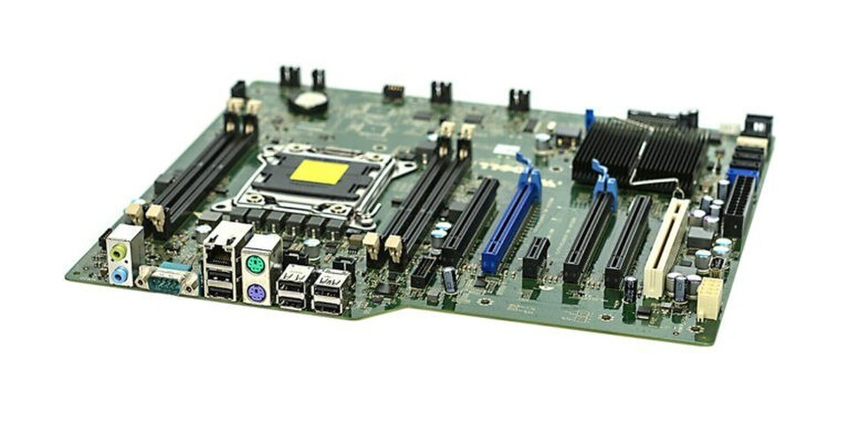

The CPU from Chapter 4 thinks. The memory from Chapter 5 remembers. A computer that does only those two things is useless to anyone except itself.
A real computer interacts with the world. You type a key and that keystroke has to reach the CPU. The CPU renders a frame and those pixels have to reach the display. A file download arrives over the network and lands on a drive. Every one of those transactions requires infrastructure we haven't talked about yet: the buses, controllers, ports, and signaling protocols that form the I/O subsystem. That's what this chapter covers.
What Is I/O?
Input is data flowing into the CPU — a keystroke, a mouse movement, a network packet, a byte read from a drive into RAM. Output is data flowing out — pixels pushed to a display, bytes written to a drive, packets sent over a network. Storage I/O is both at once: a read is input to the CPU; a write is output from it. The I/O subsystem is everything sitting between the CPU/RAM core and the outside world — the buses, controllers, ports, cables, and protocols that get a keystroke from a key switch all the way to a program. We'll follow that chain end to end — from key to screen — by the end of this chapter.
Buses — The Shared Pathways
A bus is a set of shared electrical connections that multiple components use to communicate. Think of it as a highway: multiple vehicles share the same road, and traffic management ensures they don't collide. Every component that wants to send data must wait its turn, transmit, and then yield the bus for the next sender.
Three kinds of signals travel over a traditional bus. The data bus carries the actual bits — its width determines how many can move per trip, so a 64-bit data bus moves 8 bytes per clock cycle while a 32-bit bus moves only 4. The address bus says where the bits are going (or coming from) — which memory address, which device register — and its width caps the total addressable space. The control bus handles everything else: read or write, timing pulses, interrupt requests, whose turn it is to talk. Without all three, the bits move but no one knows what to do with them.
Bandwidth is the product of bus width and clock speed. A 32-bit bus running at 100 MHz can theoretically transfer 400 MB/s. Doubling the width or doubling the clock speed doubles bandwidth — which is exactly why both approaches have been pursued over the decades. In practice, increasing width adds physical wires (and cost), while increasing clock speed raises power consumption and signal integrity challenges.
Parallel vs. Serial
There are two fundamental approaches to sending multiple bits between components. Parallel transmission sends several bits simultaneously — one wire per bit. A 32-bit parallel bus sends 32 bits in a single clock cycle. At low speeds this works well. But as clock frequencies climbed, parallel buses ran into two stubborn physical problems: crosstalk, where adjacent wires electrically interfere with each other, and skew, where signals on different wires arrive at slightly different times. Both effects worsen as frequency increases and as the bus gets wider. At high enough speeds, parallel buses corrupt their own data.
Serial transmission sends bits one at a time over a single pair of wires. This sounds slower — one bit at a time instead of 32 — but without the cross-wire interference problem, serial links can run at far higher frequencies. A serial link running at 16 GHz delivers 2 GB/s over just two wires. Multiply that by multiple lanes and you can beat a wide parallel bus while using far fewer physical connections and spending far less effort keeping signals clean.
This is why virtually every modern high-speed interface is serial: PCIe, USB, SATA, Thunderbolt, Ethernet, HDMI, DisplayPort. The shift is counterintuitive — more wires does not mean more bandwidth once you're operating at high frequencies. Cleaner signals beat wider buses.
Old buses — ISA in the 1980s, PCI in the 1990s — were shared parallel buses: every device on the bus competed for the same wires at the same time. Modern PCIe replaced that model with dedicated point-to-point serial links, solving both the contention problem and the signal-integrity problem at once.
Protocols — The Rules of Communication
We've been describing how bits travel — wires, serial signaling, clock cycles. But hardware components also need to agree on what those bits mean. A protocol is a formal specification that defines the rules of communication between devices: how data is packaged, what signals mean, how a conversation starts and ends, how errors are detected, and who speaks when. Without a shared protocol, two pieces of hardware would be like two people speaking different languages into the same phone — the signal arrives, but the message is meaningless.
Every interface name in this chapter — PCIe, USB, SATA, Thunderbolt, HDMI, DisplayPort — is a protocol. The physical connector and the communication rules are defined together in a specification maintained by an industry consortium. When a USB device is plugged into a USB port, both sides already speak the same language: they enumerate, negotiate speeds, and exchange data according to the shared rulebook. Neither device has to improvise.
Protocols typically specify:
- Packet structure — how bits are grouped into meaningful units, including headers that identify source, destination, and payload type
- Speed negotiation — how two devices discover the highest speed both support and agree to use it (this is exactly how PCIe backward compatibility works)
- Error detection — checksums or cyclic redundancy checks embedded in packets so the receiver can detect corrupted data and request retransmission
- Handshaking — the opening exchange that establishes a connection before data flows
This concept extends far beyond internal hardware. The internet runs on protocols — TCP/IP is a layered protocol stack that governs how data is routed, fragmented, and reliably delivered across the globe. We'll cover network protocols in depth in Chapter 10. For now, the key insight is: wherever two systems exchange data, a protocol governs the exchange. The word will recur throughout the rest of this course.
PCIe — The Expansion Bus
PCIe (Peripheral Component Interconnect Express) is the dominant internal bus standard for high-speed expansion hardware. Unlike the old shared PCI bus, PCIe gives each device a dedicated point-to-point serial link. There is no bus contention because each device has its own private channel. The tradeoff for that dedicated bandwidth is that each channel requires physical circuitry — PCIe lanes are a finite resource on any platform.
PCIe is organized in lanes. Each lane is a pair of unidirectional serial connections — one for transmit, one for receive — operating simultaneously. Slots are designated by lane count: ×1, ×4, ×8, or ×16. A GPU in a ×16 slot has sixteen lanes of bandwidth to the CPU. An NVMe SSD in an M.2 slot typically uses ×4. A sound card or simple network interface card might use just ×1. More lanes means more bandwidth — they scale linearly.
Each PCIe generation roughly doubles the bandwidth per lane by increasing the signaling rate:
| Generation | Released | Bandwidth per lane | ×4 slot total | ×16 slot total |
|---|---|---|---|---|
| PCIe 3.0 | 2010 | ~1 GB/s | ~4 GB/s | ~16 GB/s |
| PCIe 4.0 | 2017 | ~2 GB/s | ~8 GB/s | ~32 GB/s |
| PCIe 5.0 | 2021 | ~4 GB/s | ~16 GB/s | ~64 GB/s |
| PCIe 6.0 | 2023 | ~8 GB/s | ~32 GB/s | ~128 GB/s |
The Chipset
The CPU can't have unlimited PCIe lanes running directly to every device — each lane requires physical circuitry on the processor die, and die area is expensive and thermally constrained. The solution is the chipset — a separate chip on the motherboard that handles the connections that don't need the CPU's direct, maximum-bandwidth attention. On Intel platforms this chip is called the PCH, or Platform Controller Hub. AMD systems have an equivalent — the Fusion Controller Hub (FCH), or simply the platform controller — performing the same role.
The chipset manages:
- USB ports — all the external USB connections on the rear panel and front panel headers
- SATA ports — for HDDs and SATA SSDs, the legacy spinning-disk interface
- Audio — the onboard sound codec and the jacks on the I/O panel
- Slower PCIe lanes — for NICs, capture cards, and other expansion cards that don't need the highest possible bandwidth
The CPU and chipset communicate over a dedicated high-speed link called DMI (Direct Media Interface on Intel platforms). Think of it as a private express lane between the two chips — not as fast as a direct CPU-to-device PCIe connection, but more than sufficient for the chipset's aggregate traffic.
Over successive CPU generations, more functions that once lived in a separate chipset chip have been absorbed directly onto the CPU die. On many modern systems, USB 3.x and the fastest PCIe 4.0 and 5.0 lanes connect directly to the CPU, with the chipset handling only legacy or lower-priority connections. Some high-end desktop and server platforms have eliminated a separate chipset chip entirely, routing everything through the processor package itself.

Ports and External Interfaces
Everything discussed so far is internal — buses and controllers that live inside the machine, invisible to the user. The external side — what you can actually see and plug into — is a collection of standardized ports that expose the chipset's and CPU's connectivity to the outside world.
USB is the dominant external interface standard for peripherals and storage, but its naming history is notoriously confusing: the same interface has been renamed multiple times as speeds increased, and marketing names often differ from the official specification numbers. The widget below cuts through that confusion and gives you the practical information — what to look for on a device and when each standard is the right choice.
At the premium end of the USB-C ecosystem sits Thunderbolt, Intel's high-performance interconnect. Thunderbolt always uses a USB-C connector and is backward compatible with USB-C — a Thunderbolt 4 port also works as a regular USB-C port for any USB-C device. The distinguishing mark is a small lightning bolt icon next to the port. TB4 and TB5 ports deliver guaranteed minimum performance levels for video, charging, and daisy-chaining that regular USB-C ports don't have to meet.
For display output, HDMI dominates TVs and the majority of monitors: it's the connector on virtually every consumer display made in the last decade. DisplayPort is preferred for high-refresh-rate gaming monitors and supports daisy-chaining multiple monitors from a single port. Both carry audio alongside video. Many modern laptops deliver display output over USB-C using DisplayPort Alt Mode — the physical USB-C cable carries a DisplayPort signal, so no separate video cable is needed. HDMI Alt Mode is less common but exists on some phones and tablets.
Interrupts
In Chapter 4 we established that the CPU does exactly one thing: it executes the fetch-decode-execute loop, over and over, billions of times per second. That description was accurate, but it left out something important. If the CPU is busy executing instructions continuously, how does it know when a device needs attention? How does a keystroke get processed? How does an arriving network packet get noticed?
Two answers have been used, and understanding both explains a lot about how operating systems work.
Polling is the naive approach: the CPU periodically checks each device. "Do you have input? No. Do you have input? No. Do you have input? Yes — got it." This works, but it wastes CPU cycles on checks that almost always return nothing. A CPU polling a keyboard at 1,000 times per second burns compute on 999 fruitless checks for every one keystroke. Scale that to dozens of devices — drives, network cards, audio controllers, USB hubs — and polling becomes a serious drain on the processor's ability to do useful work.
Interrupts invert the relationship: instead of the CPU asking devices, devices tell the CPU when they need attention. A device sends a hardware signal called an interrupt request (IRQ). The CPU receives it, pauses whatever instruction stream it was executing, saves its current state — the values in all its registers and the program counter — jumps to a small handler routine called an Interrupt Service Routine (ISR), runs it, then restores its saved state and resumes exactly where it left off. From the perspective of the program that was interrupted, nothing happened; execution picks up at the next instruction as though nothing had paused it.
The interrupt approach is far more efficient. The CPU can run useful work continuously and only context-switch when something actually needs attention — the same logic behind a phone notification instead of you manually refreshing every app every few seconds. Modern systems handle hundreds of thousands of interrupts per second from all their devices combined, but because each ISR is short and the gaps between interrupts are full of useful computation, the overhead is manageable.
The interrupt controller — called the APIC (Advanced Programmable Interrupt Controller) on modern x86 systems — manages the queue of incoming IRQs, assigns priorities, and delivers them to the appropriate CPU core. Higher-priority interrupts can preempt lower-priority ones. This hardware infrastructure is the foundation that the operating system builds on top of — Chapter 8 covers how the OS uses interrupts for process scheduling, device management, and system calls.
Machine State
When an interrupt fires, the CPU can't simply abandon what it was doing — it needs to resume at precisely the right point afterward. That means every piece of the CPU's current working context has to be preserved before the ISR runs. This snapshot is called the machine state (also called the CPU context). It includes:
- General-purpose registers — the values in RAX, RBX, RCX, and the rest that the interrupted program was using as scratch space (these register names are x86-specific — other architectures use different names, but every CPU has the same concept)
- The program counter — the address of the next instruction that was about to execute
- The flags register — status bits set by the last arithmetic or comparison operation (zero flag, carry flag, sign flag, etc.) that a branch instruction may be about to read
If any of these are overwritten by the ISR and not restored, the interrupted program will resume with corrupted data — wrong values in registers, the wrong next instruction, wrong branch behavior. The machine state save and restore must be exact.
The Stack
Machine state is saved to the stack — a region of RAM reserved for exactly this kind of temporary, ordered storage. The stack operates on a simple rule: last in, first out. Data is pushed onto the top, and the most recently pushed item is the first to come back off. The CPU maintains a dedicated register called the stack pointer (RSP on x86-64) that always holds the address of the current top of the stack.
When an interrupt fires, the sequence is:
- The CPU finishes the current instruction
- It pushes the machine state — registers, program counter, flags — onto the stack, and the stack pointer advances to track the new top
- The CPU jumps to the ISR and executes it
- At the end of the ISR, a special return instruction pops the saved state back off the stack into the correct registers
- Execution resumes at exactly the instruction that was about to run before the interrupt
From the perspective of the interrupted program, the interrupt never happened. Every register holds exactly the value it held before; the program counter points to the right place; the flags are intact.
How the CPU Sees I/O
We've traced a keystroke through USB controllers, interrupt requests, ISRs, and chipset routing. Internally, all of that complexity bottlenecks into something remarkably simple: from the CPU's perspective, every I/O operation is just a memory read or write.
This technique is called memory-mapped I/O. The processor's address space — the full range of addresses a 64-bit CPU can reference — is divided between RAM and device registers. Device controllers are assigned specific address ranges outside of RAM. A USB host controller occupies a set of addresses. A network card occupies others. When the OS wants to send data to a device, it writes to that device's address range. When it wants to read what a device received, it reads from that address. There are no special "talk to USB" or "talk to keyboard" instructions in the CPU's instruction set. There is only LOAD and STORE.
The keystroke example, end to end:
- A key is pressed → electrical signal at the key switch
- The keyboard's microcontroller encodes the keycode into a USB packet
- The USB host controller receives the packet and writes the keycode to its memory-mapped register
- The controller fires an IRQ to the CPU
- The CPU saves machine state, jumps to the ISR, and executes one instruction: LOAD from a memory address
- That byte is the keycode — the OS passes it to whatever application has focus
The CPU executed a LOAD. It doesn't know or care whether that byte came from RAM, a keyboard controller, a network card, or anywhere else. The address space abstracts away the source entirely. This is why the CPU design from Chapter 4 is so clean: there is only the fetch-decode-execute loop, reading and writing addresses. All the complexity of devices, buses, and protocols lives in the hardware behind those addresses — not in the processor itself. The CPU is as simple as we said it was.
IN and OUT instructions for talking to devices, using a separate "I/O port" address space rather than the main memory address space. You'll encounter these in older x86 documentation. Modern systems overwhelmingly use memory-mapped I/O, but the instructions still exist for legacy hardware paths.
System Architecture — The Full Picture
We've now covered all the major components: CPU, RAM, PCIe, chipset, and the I/O mechanisms that tie them together. The diagram below shows how they connect.
The diagram reveals the two-tier structure of modern system architecture. The CPU connects directly to the components that demand the highest bandwidth: RAM over the memory bus, and the GPU and NVMe SSD via CPU-direct PCIe lanes. The GPU alone can consume 32–64 GB/s of PCIe bandwidth in a modern ×16 slot, and an NVMe SSD can approach 14 GB/s. Routing these through an intermediary chipset would create a chokepoint; they get their own private lanes to the processor.
Everything else — USB peripherals, SATA drives, the network interface, onboard audio — routes through the chipset via the DMI link. These devices have lower bandwidth demands. A USB 3.2 Gen 2 device peaks at 10 Gbps; even a fast NIC runs at 10 or 25 Gbps. The chipset aggregates all of this traffic and sends it to the CPU over DMI. This division of labor — CPU-direct for latency-sensitive, high-bandwidth devices; chipset-mediated for everything else — is the core design principle of the modern PC platform.